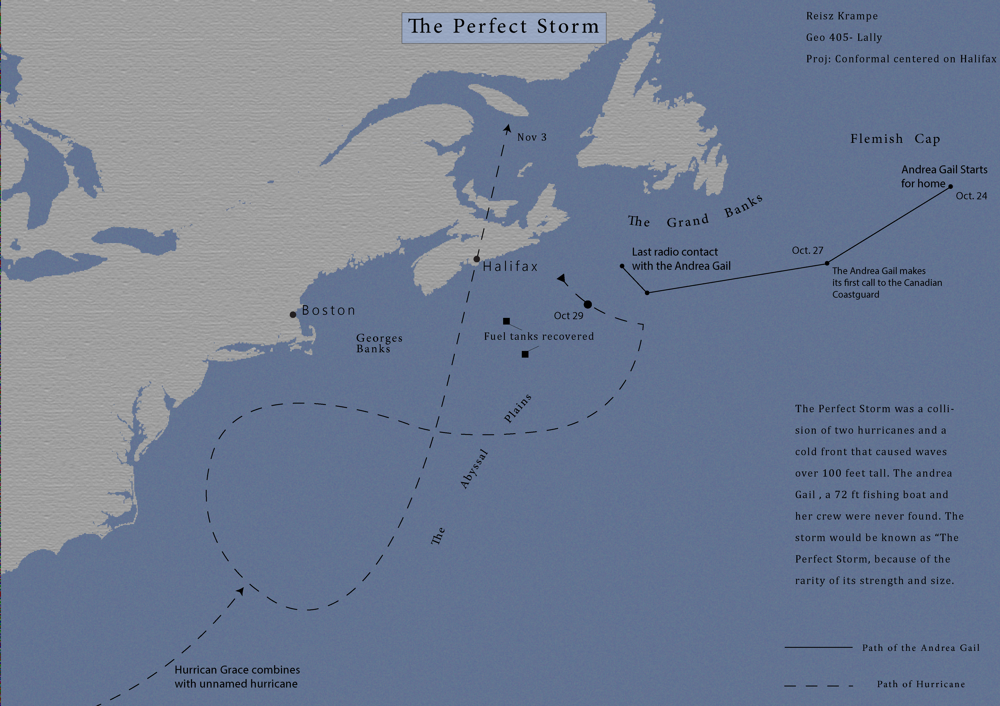

About
I am a recent graduate from the University of Kentucky. I have experience in precision agriculture, GIS, and Cartography. My GIS skills include ArcPy, ArcPro, SQL, HTML, and Markdown. I have two years of experience with the ESRI suite, and some experience with QGis, FourSquare and MapBox. Below are the maps I am the most proud of.
Projects
The Perfect Storm

This map shows the path of the Andrea Gail, a sunken fishing vessel that was the inspiration for the movie The Perfect Storm. The movie was a favorite of my father and grandfather, which is the inspiration for the map
UFO sighting prevalence

With the recent release of UFO sighting information from the pentagon, I decided to make a map showing the prevalence of UFO sightings in the USA. The data was normalized by county population.
High Bridge in Kentucky
This Video shows an animation of the railway bridge in Highbridge, KY. This bridge has a special place in my heart, as my friends and I climbed it multiple times in college. Data is derived from KyFromAbove LiDar point clouds and colorized with aerial imagery
Darien Gap

The Darien Gap is the most dangerous migration causeway in the world. When I studied abroad in Oaxaca, Mexico, I met a group of migrants who had just traversed the gap. Data is a DEM converted to an unsigned 16 bit integer and rendered in blender.
Contact
Email: chandler.krampe@gmail.com